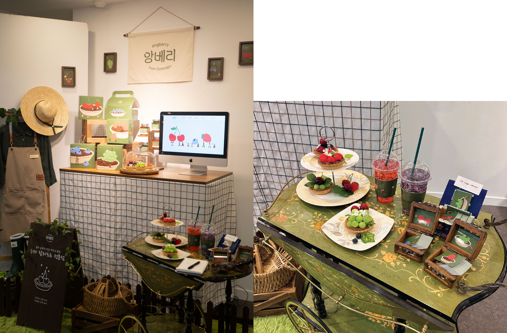
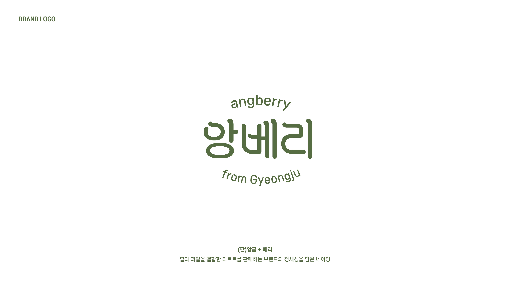
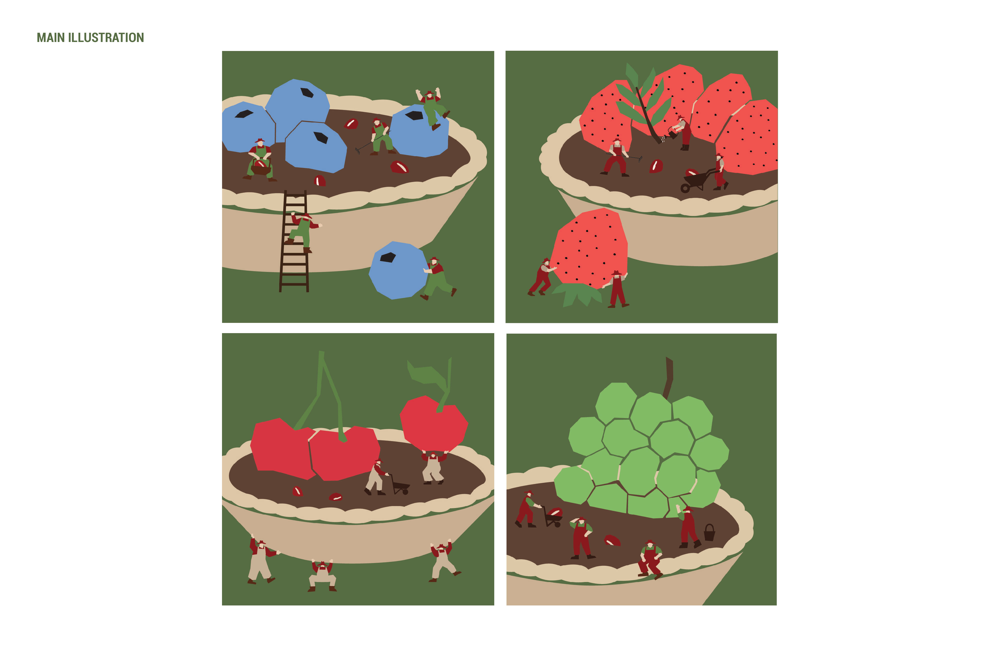
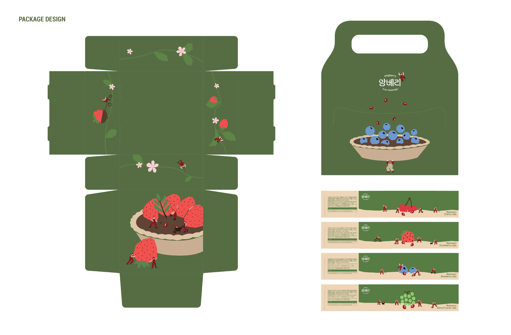

| Overview |
앙베리는 경주 농부가 직접 키운 팥과 과일로 만든 수제 팥타르트 전문 브랜드입니다.
경주 지역의 농부와 소비자 간의 연결을 돕고, 경주 지역 특산물로
건강함과 정성을 담은 디저트를 제공하는 것을 목표로 합니다.

| Brand Logo |
브랜드가 가진 자연 친화적이고 따뜻한 이미지와 식물 줄기에서 모티브를 얻어
디자인한 로고입니다. 직접 키운 재료로 만든 팥타르트라는
앙베리의 브랜드 철학을 담아 건강하고 신뢰할 수 있는 브랜드 이미지를 강화합니다.

| Main Illustration |
소인국을 컨셉으로 앙베리 마을의 작은 농부 캐릭터가 등장해, 각각의 팥타르트 위로
다양한 과일을 나르고 올리는 장면을 연출한 일러스트레이션입니다.
디자인을 통해 앙베리 브랜드의 이야기를 전달하고자 합니다.

| Package Design |
패키지는 타르트 박스와 캐리어, 잼 라벨로 나눠져 있습니다. 블루베리, 딸기, 체리, 샤인머스캣
네 가지 과일에 따라 대표 색상을 지정하고 각각 다른 장면을 연출해 패키지를 디자인했습니다.

| Brand Film |
앙베리의 브랜드 철학을 담은 이야기를 영상으로 풀어냈습니다. 작은 농부가 직접 과일과 팥을 기르고 수확하여
타르트를 완성하기까지 모든 과정에 대한 이야기를 담은 브랜드 필름입니다.